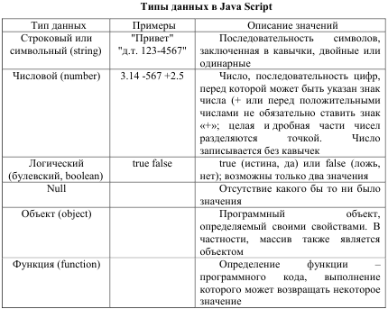

JavaScript
Ввод и вывод данных
JavaScript был создан в 1995 году как инструмент, предоставляющий веб-дизайнерам возможности программирования. Все современные браузеры имеют поддержку JavaScript. JavaScript встраивается прямо в веб-страницы и исполняется браузером во время их загрузки.
JavaScript добавляется на веб-страницы с помощью тэга <script>.
В следующем примере на страницу выводится текст «Я изучаю
JavaScript»:
<script type="text/javascript">
document.write("Я изучаю JavaScript.");
</script>
JavaScript код также может храниться во внешнем текстовом файле с расширением
.js и подключаться к страницам с помощью тэга <script> следующим образом:
<script type="text/javascript" src="ex.js"></script>
JavaScript чувствителен к регистру букв.
В JavaScript существует два вида комментариев: короткие и
длинные. Все, что находится после символа
// до конца строки, будет являться коротким комментарием. Многострочные комментарии начинаются с
/* и заканчиваются
*/.
В JavaScript предусмотрены три стандартных метода для ввода и вывода данных:
alert(),
prompt() и
confirm().
Метод
alert() позволяет выводить диалоговое окно (окно оповещения) с заданным сообщением и кнопкой ОК. Используется в случаях, когда необходимо, чтобы пользователь обязательно обратил внимание на определенную информацию.
Метод
confirm() позволяет вывести диалоговое окно (окно подтверждения) с сообщением и двумя кнопками – ОК и Отмена (Cancel). Используется в случаях, когда необходимо, чтобы пользователь подтвердил или отклонил что-либо. Если пользователь
щелкнул на кнопке ОК, то возвращается значение
true; если щелкнул на кнопке Отмена, то возвращается значение
false.
Метод
prompt() позволяет вывести на экран диалоговое окно (окно запроса) с сообщением, а также с текстовым полем, в которое пользователь может ввести данные. Используются в случаях, когда от пользователя необходимо получить определенную информацию. В этом окне предусмотрены две кнопки: ОК и Отмена (Cancel). В отличие от методов
alert() и
confirm() данный метод принимает два параметра: сообщение и значение, которое должно появиться в текстовом поле ввода данных по умолчанию.
Пример применения методов для ввода и вывода данных:
<html>
<head>
<script type='text/javascript'>
function fun1() {
alert('Я окно оповещения');
}
function fun2() {
confirm('Я окно подтверждения');
}
function fun3() {
x=prompt('Введите Ваше имя:', 'Имя');
document.write('Здравствуйте, '+ x);
}
</script>
</head>
<body>
<input type='button' value='Окно оповещения' onclick='fun1()' />
<input type='button' value='Окно подтверждения' onclick='fun2()' />
<input type='button' value='Окно запроса' onclick='fun3()' />
</body>
</html>
Типы данных
Типы данных представлены в таблице.

Операторы
Функции
Операторы цикла